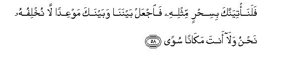
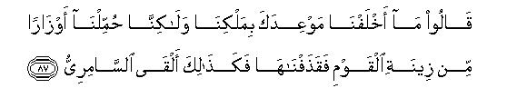
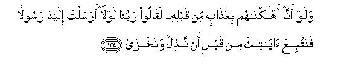

بسم الله الرحمن الرحيم
Sayyid Abul Ala Maududi - Tafhim al-Qur'an - The Meaning of the Qur'an
 20.
Surah Ta Ha
20.
Surah Ta Ha
This Surah takes its name from its "first word "Ta Ha." This name, like the names of many other Surahs, is merely symbolic.
The period of its revelation is the same as of Surah Maryam. It is just possible that it was sent down during the Migration to Habash or just after it. Anyhow, it is certain that this Surah was revealed before Hadrat Umar embraced Islam.
According to a well known and authentic tradition when Hadrat Umar set out to kill the Holy Prophet, he met a certain person, who said, "Before you do anything else, you should know that your own sister and brother-in-law have embraced Islam" Hearing this, he directly went to the house of his sister. There he found his sister, Fatimah, and his brother-in-law, Said bin Zaid, learning the contents of a scroll from Khabbab bin Art. When Fatimah saw him coming she hid the scroll at once, but Hadrat Umar had heard the recital, so he began to interrogate them about it. Then he began to thrash his brother-in-law, and wounded his sister, who tried to protect him. At last both of them confessed, "We have become Muslims; you may do whatever you like." As Hadrat Umar was moved to see blood running down from her head, he said, "Show me the thing you were reading." The sister asked him to promise on oath that he would not tear it, and added, "You cannot touch it unless you have a bath." Accordingly, Hadrat Umar took his bath and when he began to read the scroll, which contained this Surah, he spontaneously spoke out, "What an excellent thing!" At this Hadrat Khabbab, who had hidden himself at the sound of his footsteps, came out of his hiding and said, "By God, I have high expectations that Allah will get great service from you to propagate the Message of His Prophet, for just yesterday I heard the Holy Prophet praying to Allah, 'My Lord, make Abul Hakam bin Hisham (Abu Jahl) or Umar bin Khattab a supporter of Islam. So O Umar, turn to Allah, turn to Allah." These words proved to be so persuasive that he at once accompanied Hadrat Khabbab and went to the Holy Prophet to embrace Islam. This happened a short time after the Migration to Habash.
This Surah begins with the enunciation of the object of the Revelation of the Qur'an to this effect:"O Muhammad, this Quran has not been sent down to you to put you unnecessarily to some great affliction. It does not demand from you to perform the impossible task of imbuing the hearts of the obdurate disbelievers with Faith. It is merely an admonition meant to guide on to the Right Path those who fear God and want to save themselves from His punishment. This Quran is the Word of the Master of the earth and the heavens and God-head belongs to Him alone:These two facts are eternal whether one believes them or not."
After this introduction, the Surah abruptly moves on to relate the story of Prophet Moses without any apparent relevancy and without even hinting at its applicability to the events of the period. However, if we read between the lines, we realize that the discourse is addressed very relevantly to the people of Makkah. But before we explain the hidden meaning of the discourse, we must keep in view the fact that the Arabs in general acknowledged Moses as a Prophet of God. This was so because they had "been influenced by the large number of the Jews around them and by" the neighboring Christian kingdoms. Now let us state those things which are hidden between the lines of the story:
Allah does not appoint a Prophet by the beat of drums or My celebrating the occasion in a regular and formal ceremony, as if to say, "We are appointing such and such a person as Our Prophet from today." On the contrary, He bestows Prophethood in a confidential manner just as He did in the case of Prophet Moses. Therefore you should not consider it strange if Hadrat Muhammad has been appointed as a Prophet all of a sudden and without any public proclamation.
The fundamental principles presented by Prophet Muhammad - Tauhid and the Hereafter - are just the same as were taught to Prophet Moses at the time of his appointment.
Prophet Muhammad has been made the standard bearer of the Message of the Truth among the people of the Quraish all by himself without material provisions, just as Prophet Moses was entrusted with the Mission to go to a tyrant king like Pharaoh and ask him to give up his attitude of rebellion. These are the mysterious ways of Allah. He catches hold of a way farer of Midian on his way to Egypt and says, "Go and fight with the greatest tyrant of the time." He did not provide him with armies and provisions for this Mission. The only thing He did was to appoint his brother as his assistant at his request.
You, O People of Makkah, should note it well that Pharaoh employed the same devices against Prophet Moses as you are employing against Prophet Muhammad -- frivolous objections, accusations, and cruel persecutions. You should know that Allah's Prophet came out victorious over Pharaoh, who possessed large armies and war equipments. Incidentally, the Muslims have been consoled and comforted, though not in so many words, that they should not be afraid of fighting with the Quraish against fearful odds, for the mission which is supported by Allah comes out victorious in the end. At the same time, the Muslims have been exhorted to follow the excellent example of the magicians of Egypt, who remained steadfast in their Faith, though Pharaoh threatened them with horrible vengeance.
An incident from the story of the Israelites has been cited to show in what ridiculous manner the idolization of false gods and goddesses starts and that the Prophets of God do not tolerate even the slightest tinge of this preposterous practice. Likewise, Prophet Muhammad is following the former Prophets in opposing shirk and idol worship today.
Thus, the story of Moses has been used to throw light on all those matters which were connected with the conflict between the Holy Prophet and the Quraish. Then at the end of the story, the. Quraish have been briefly admonished, as if to say, "The Quran has been sent down in your tongue for your own good. If you listen to it and follow its admonition, you will be doing so for your own good but if you reject it, you will yourselves meet with an evil end."
After this the story of Prophet Adam has been related, as if to tell the Quraish, "The way you are following is the way of Satan, whereas the right way for a man is to follow his father Adam. He was beguiled by Satan, but when he realized his error, he plainly confessed it and repented and again turned back to the service of Allah and won His favor. On the other hand, if a person follows Satan and sticks to his error obdurately in spite of admonition, he does harm to himself alone like Satan."
In the end, the Holy Prophet and the Muslims have been advised not to be impatient in regard to the punishment to the disbelievers, as if to say, "Allah has His Own scheme concerning them. He does not seize them at once but gives them sufficient respite. Therefore you should not grow impatient but bear the persecutions with fortitude and go on conveying the Message."
In this connection, great emphasis has been laid on Salat so that it may create in the believers the virtues of patience, forbearance, contentment, resignation to the will of God and self analysis for these are greatly needed in the service of the Message of the Truth.

In the name of Allah, the Compassionate, the Merciful.
[1-8] Ta Ha. We have not sent down the Qur'an to you to put you in distress. This is an Admonition for every such person who fears (God).1 This has been sent down by that Being, Who has created the earth and the high heavens. The Merciful is sitting on the throne of the Kingdom. (of the universe)2 He is the Owner of all that which is in the heavens and the earth and all that which is between them and under the soil. Whether you utter your supplication in a loud voice (it makes no difference) for He hears not only what is said in a low voice but also what is kept most secret.3 He is Allah: there is no god but He; all the excellent names are for Him.4
[9-10] And has the history of Moses reached you? When he saw a fire5 he said to his family, "Wait a bit, I have seen a fire: it may be that I bring a burning brand for you, or find guidance (to the way) at the fire."6
[11-17] When he reached there, a voice called out, "O Moses, I am your Lord; take off your shoes,7 for you are in the sacred valley of Tuwa.8 And I have chosen you: so listen to what is revealed. It is Who am Allah: there is no god but Me: so worship Me and establish Salat to remember Me.9 The Hour of Resurrection is sure to come, but it is My will to keep the time of its coming secret so that every soul may be recompensed according to its labors.10 Therefore let not any person who does not believe in it and has become a slave of his lusts, turn your thoughts away from it, lest you perish- And O Moses, what is this in your right hand?"11
[18] Moses replied, "It is my staff: I lean upon it and I beat down leaves with it for my flock, and I have quite a few other uses for it."12
[19] He said, "Cast it down, O Moses."
[20] So he cast it down and immediately it turned into a snake, which began to run about.
[21-24] He said, "Catch hold of it and do not fear for We will again restore it to its former state. Now clasp your hand under your arm-pit: it will come out shining without any hurt (to you).13 This is the second Sign: this is because We are going to show you Our great Signs. Now go to Pharaoh for he has become rebellious.

[25-35] Moses said, "Lord, open my breast for me14 and make my task easy for me, and remove the impediment from my tongue so that people may understand my speech,15 and appoint a counselor for me from my own family, and strengthen my hands by means of Aaron, who is my brother,16 and make him my associate in my work so that we may glorify Thee and remember Thee always. Thou hast always been watching over us."

[36-42] He said, "Your request is granted, O Moses. We have shown favor to you for the second time.17 Recall the time when We inspired your mother with this idea by means of a Revelation: `Place this child in a box and put the box in the river; the river will cast it on to the bank and My enemy and his enemy will pick it up. I Myself made you an object of love and so arranged things that you should be brought up under My supervision. Recall the time when your sister was walking along; then she said: `May I inform you of one, who will bring up this child in the best manner?' Thus We returned you to your mother so that her .eye might be cooled and she might not be grieved. And (also remember that) you killed a certain person and We freed you from its evil (consequences) and put you through various trials and you stayed with the people of Midian for several years. Now you have come back at the right time: O Moses, I have molded you for My Mission. You and your brother should go (on the Mission) with My Signs. And see that you do not show any negligence in remembering Me."
[43-44] "Go both of you to Pharaoh, for he has transgressed all bounds. Talk to him in a gentle manner; may be that he is convinced by admonition or imbued with fear."18
[45-48] The two18a said, "Lord, we dread that he will behave unjustly towards us or treat us cruelly." He answered, "Have no fear: I am with you: I hear everything and see everything. Go to him and say, “We are Messengers from your Lord, so let the Israelites go with us, and do not oppress them. We have come to you with Signs from your lord; and peace is for him who follows the Right Way. We have been informed by Revelation that there is scourge for him who rejects it and turns away.”19

[49] Pharaoh20 said, "Well, who is the Lord of you both, O Moses?"21
[50] Moses replied, "Our Lord is He22 Who has given a distinctive form to everything and then guided it aright."23
[51] Pharaoh said, "And what was the position of the generations who have passed before?"24
[52-55] Moses replied, "The knowledge of that is with my Lord, secure in a writing; my Lord neither errs nor forgets."25
He26 it is Who has spread the earth as a bed for you, and made paths for you to move about (from place to place); He sent down rain water from above and produced different kinds of vegetation: eat of these and graze your cattle. Surely there is many a Sign in this for those who possess common sense.27 We have created you from this earth and We will return you into it and then will bring you forth out of it once again.28

[56-58] We showed all (kinds of) Our Signs29 to Pharaoh, but he went on treating them as falsehood and refused to believe. He said, "O Moses, have you come to drive us out of our land by the power of your sorcery?30 Well, we will also bring as strong a sorcery as yours. So settle with us when and where should the encounter take place; then neither should we back out of this agreement nor you. Come out in the open field."
[59] Moses replied, "Let the encounter take place on the Day of the Feast, and the people assemble after the rising of the sun."31
[60] Pharaoh then withdrew and gathered together all his devices, and came to the encounter.32
[61] (On the very occasion) Moses warned (his adversaries), saying,33 "O unfortunate people, do not invent falsehoods in regard to Allah:34 otherwise He will destroy you by a scourge: for whoso invented a falsehood, perished."
[62-64] Hearing this, a difference of opinion arose among them concerning the issue, and they began to hold secret consultations.35 At last some of them decided the issue, saying,36 "These two are no more than sorcerers. Their object is to drive you out of your homeland by the power of their sorcery, and bring to an end your ideal way of life.37 Therefore muster up all your devices and come into the field with a united front.38 You should realize that whoso comes out victorious today, he will win (the battle of ideology)."
[65] The magicians39 said, "O Moses, will you cast down (your things) or shall we cast down first?"
[66-70] Moses replied, "No, cast down (yours).”
Suddenly it so appeared to Moses that their cords and staffs were running about by the power of their magic,40 and Moses' heart was filled with fear.41 We said, "Don't fear for you will come out victorious. Cast down what is in your hand, and it will swallow up all their sham creation;42 for they are mere tricks of a magician; and a magician can never succeed, howsoever skilled he may be." Accordingly, at the end of the encounter, all the magicians were cast down to prostration43 and they cried out, "We believe in the Lord of Aaron and Moses."44
[71] Pharaoh said, "Have you believed in him before I gave you permission? Obviously, he is your master who has taught you sorcery.45 Well, now I will have your hands and feet cut off on alternate sides46 and crucify you on the trunks of palm-trees47 then you shall know whose punishment is more terrible and tasting (mine or that of Moses)."48
[72-76] The magicians replied, "By Him Who has created us, we can never prefer you (to the Truth) after we have seen clear Signs.49 Therefore you may do your worst, for at the most you can pass judgment concerning this worldly life. We have believed in our Lord so that He may pardon our errors, and forgive us the sin of sorcery which you forced us to practice. Allah is Best and Eternal." In fact,50 for the one who comes before his Lord as a criminal, there shall be Hell, wherein he shall neither live nor die.51 As for the one, who comes before Him as a Believer, who has done good deeds, all such people will have the highest ranks for them. They will dwell for ever in the evergreen Gardens beneath which canals flow. Such is the reward of the one who adopts purity.
[77] We52 sent this Revelation to Moses: "Set forth with My servants during the night and make for them a dry path across the sea.53 Have no fear of being overtaken nor be afraid (while passing through the sea)."
[78-79] Pharaoh pursued them with his hosts but the sea overwhelmed them completely.54 Pharaoh had misled his people and had not guided them aright.55
[80-82] O children of Israel,56 We rescued you from your enemy and fixed a time for your attendance on the right side of Tur,57 58 and sent down manna and salva to you.59 Eat of the pure provision We have given you and do not transgress after this; otherwise My wrath will visit you. And he who is visited by My wrath is bound to perish except the one who repents and believes and does righteous deeds and then follows the straight path, for I am very forgiving for such a one.60
[83] "And Moses,61 what has hastened you to come here before your people?"62
[84-85] He said, “They are just coming behind me: I have hastened to come before Thee, O my Lord, so that Thou mayst be pleased with me.” He said, “Well, listen! We put your people to a trial after you and the Samiri63 has misled them.”
[86] Moses returned to his people in a state of anger and grief. Reaching there, he said, "O my people, did not your Lord make good promises with you?64 Had a long time passed since those promises were fulfilled?65 Or did you want Allah's wrath to come down upon you that you went against your Covenant with me?"66

[87-89] They answered, "We did not go against the Covenant with you of our own accord; it so happened that we felt burdened with the ornaments of the people and we merely threw them down.67 Then68 the Samiri also put down something like these and forged the shape of a calf which lowed like an ox. Then the people cried out, “This is your god and the god of Moses. Moses has forgotten it.” Did they not see that it did not respond to their prayer nor had it any power to hurt and benefit them?
[90-91] Aaron had already warned the people, saying, "O people, you have been involved in mischief by this (calf) In fact, your Lord is Rahman, so follow me and submit to me." But they replied, "We will go on worshiping it till Moses comes back to us."69
[92-93] (After rebuking the people, Moses turned to Aaron) and said,"O Aaron, what prevented you from following my way when you saw that they were going astray? What, did you disobey my command?"70
[94] Aaron said, “O son of my mother,do not seize me by my beard nor pull the hair of my head.71 I was afraid that you might say on your return, “You sowed discord among the Israelites and did not pay due heed to my words!”72
[95] (Then Moses turned to Samiri) and said, "O Samiri, what have you to say about the matter?"
[96] He replied, "I saw what the people did not see: so I took a handful of dust from the footprints of the Messenger, and sprinkled it (on the calf), for so did my soul prompt me."73
[97] Moses said, “Well, get away! now you shall have to say throughout your life: “Touch me not”74 And there is an appointed time for your reckoning which is inevitable. And just have a look at your god which you cherished so much: now We will burn it and shatter it and cast the ashes into the sea.”
[98] O people, your God is Allah alone Who has no other god beside Him: His knowledge embraces everything.


[99-112] O Muhammad,75 thus do We relate to you the history of the past events, and We have given you an "Admonition" from Our Own Self.76 Whoso will turn away from it, he shall bear a heavy burden of sin on the Day of Resurrection; and all such people shall always remain under its heavy burden, and it will be a very heavy responsibility indeed that they shall have to bear on the Day of Resurrection.77 On that Day, when the Trumpet will be blown78 and We will muster the criminals while their eyes shall be dimmed (with terror),79 they will whisper to one another, "You hardly stayed for ten days on the Earth."80 We know full well81 what they will be talking; (We also know that) at that time the most careful estimator among them will say, "No, your life on the Earth was but for a day.”82 They ask you, "Well, where will the mountains go on that Day?" Say to them, "My Lord will reduce them to fine dust and scatter it away. He will turn the Earth into an empty level plain, wherein you will neither see any curve nor crease."83 On that Day the people will come straight to the call of the summoner; no one will dare show any haughtiness, and all the voices will be hushed before the Merciful and you will hear nothing but a whispering murmur.84 On that Day no intercession shall avail save his whom the Merciful may allow to intercede and be pleased to give him a hearing.85 He is fully aware of all that is before the people and of all that is behind them but others do not have full knowledge of it.86 The people will hang their heads with awe before the Living One, the Eternal. Loser shall be the one who will be carrying the burden of the sin of an iniquity, but whoso does righteous deeds and is a Believer as well, he shall have no fear of any injustice nor shall he be deprived of his rights.87
[113] And, O Muhammad, thus have We sent this down as an Arabic Qur'an88 and have given therein warnings in various ways, perhaps these people may be saved from perverseness or that this may help arouse understanding in them.89
[114] So, high and exalted is Allah, the True King.90
And see that you do not hasten to recite the Qur'an before its revelation is completed to you, and pray, "O my Lord, give me more of knowledge."91

[115-120] We92 gave a command to Adam before this,93 but he forgot it, and We did not find firmness of purpose in him:94 Recall to mind the tithe when We said to the angels: "Bow yourselves to Adam;" they all bowed down except Iblis, who refused. At this, We said to Adam,95 "He is an enemy to you and to your wife.96 Be on your guard lest he should have you expelled from the Garden97 and you find yourself in great distress. For here you have quite a few facilities: you neither starve nor remain naked nor suffer from thirst nor from sun."98 But Satan seduced him,99 saying "O Adam, should I show you the tree which gives eternal life and everlasting kingdom?"100
[121-127] At last, both of them (Adam and his wife) ate of the fruit (of the forbidden tree). As a result thereof, the nakedness of each appeared before the other, and they began to cover themselves up with leaves from the Garden.101 Adam disobeyed his Lord and went astray from the right way.102 Afterwards his Lord chose him103 and accepted his repentance and gave him Guidance, saying,104 "Get down from here both of you (Man and Satan): you will remain enemies to each ether. After this, if you receive Guidance from Me; whoso will follow that Guidance, he will neither go astray nor be involved in wretchedness, and whoso will turn away from My Admonition, he shall have a wretched life105 in the world, and We shall raise him up blind on the Day of Resurrection."106 He will say, "Lord, why have you raised me blind here, whereas I was blessed with sight in the world ?" Allah will say, "Yes; you forgot Our Revelations when they came to you, (as if you were blind), so you are being forgotten today"107 This is how We recompense (in this world)108 those who transgress the bounds and do not believe in the Revelations of their Lord. And the torment of the Hereafter is more terrible and more lasting.
[128] Have these people109 not received any guidance (from this lesson of history) that We have destroyed before them many a generation in whose (ruined) habitations they move about today? In fact, there are many Signs in this for sagacious people.110

[129-132] Had not a decree been fore-ordained by your Lord and a term for respite been appointed, judgment on them would have been passed now immediately. Therefore O Muhammad, endure what they say and glorify your Lord with His praise before the rising of the sun and before its setting, and glorify Him during the hours of the night and at the extremes of the day:111 perhaps you may feel satisfied.112 And do not cast an envious look at the worldly property We have bestowed on different kinds of people, for We have given them all that to put them to trial, and the lawful provision113 of your Lord is better and more lasting: enjoin Salat on the members of your family114 and yourself also observe it strictly. We do not ask any provision of you, for it is We Ourself Who give you provision. And the ultimate good is for piety.115

[133-135] They say, "Why does he not bring us a Sign from his Lord?" Has not a clear Sign come to them containing all the teachings of the former Scriptures?116 Had We destroyed them with a scourge before its coming, these very people would have said, "Our Lord, why did you not send a Messenger to us so that we would have followed Your Revelations before we were humiliated and disgraced?" O. Muhammad say to them, "Everyone is waiting for the ultimate result;117 so you may also wait, for you will soon come to know who are following the straight path and who are rightly guided."
1This verse makes plain the meaning of the previous one. The object of the Revelation of the Qur'an is riot to make the Holy Prophet do something impossible and to put him to unnecessary distress by demanding from him to imbue the hearts of the obdurate people with Faith, but to admonish those people who have fear of Allah. Therefore the Holy Prophet should not waste his efforts on those people who have no fear of God left in them, and who do not bother at all about what is Truth and what is falsehood.
2That is, "After creating the universe, He is ruling over it and conducting all the affairs of its management."
3That 'is, "You need not complain to Allah in a loud voice against the persecution from which you and your companions are suffering and the mischievous machinations your enemies are devising to defeat you for Allah is fully aware of all those things, and He hears even the complaints you cherish in your hearts."
4That is, "He possesses all the excellent attributes and characteristics."
5This happened when Prophet Moses was returning to Egypt after passing several years in exile in Midian, along with his wife whom he had married there. According to the early part of his history, which has been related in Surah XXVIII (Al-Qasas), an Egyptian had been killed by Prophet Moses; so he had to leave Egypt in order to escape arrest and had taken refuge in Midian.
6It appears that this happened during a night of winter, when Prophet Moses was passing through the southern part of the Sinai Peninsula. When he saw a fire at a distance, he went towards it in the hope that he might get some of it to keep his wife and children warm during the night, or at least get some guidance concerning the direction of his journey. But instead of this it was his good fortune that he found the guidance to the Right Way.
7Probably, it is because of this that the Jews do not say their prayers with their shoes on. The Holy Prophet, however, removed this misunderstanding, saying, "Act in contrast to the practice of the Jews who do not say their prayers with their shoes or leather socks on." (Abu Da'ud). It does not, however, mean that one must say one's prayers with the shoes on, but it is merely to make it lawful to say prayers with shoes on. This is confirmed by another tradition, related by Abu Da'ud from `Amar bin `As, that he had seen the Holy Prophet saying his prayer both with and without the shoes.
There are other traditions also to this effect but it should also be kept in mind that there were no carpets, mats, etc. in the mosques in those days, not even in the Holy Prophet's Mosque. Therefore it would be improper to go with shoes on into the mosques of today which have carpets, mats, etc. However, one may say one's prayer on grassy plots or open ground with shoes on.
8In general, the commentators are of the opinion that Tuwa was the name of the valley, but according to some it means, "The valley that had been made sacred for the time being."
9This is the real object of Salat. It has been prescribed to remind people that they should not become neglectful of Allah by worldly diversions and that they should remember that man is not an unbridled free being but a servant of Allah. Salat has been prescribed five times a day to remind man of Allah's presence.
Some people are of the opinion that it means: "Establish Salat, so that I may remember you."
Incidentally, according to this verse, if one forgets to offer a prayer in time, one should offer it when one recollects it. This is also supported by a tradition related by Hadrat Anas: "If one forgets to offer a certain prayer at the proper time, he should offer it whenever he recollects this; for there is no other expiation for this omission." (Bukhari, Muslim, Ahmed). There is another tradition related by Abu Hurairah to the same effect. It was inquired from the Holy Prophet: "What should we do if we remained asleep during the time of prayer?" The Holy Prophet said, "There is no sin if one remained asleep. The sin is that one should neglect one's prayer intentionally while awake. Therefore if one forgets to offer a prayer or remained asleep one should offer that prayer on remembering it or on awaking." (Tirmizi, Nasa'i, Abu Da'ud).
10After Tauhid the second thing that was revealed to all the Prophets was the reality of the "Hereafter", and they were appointed to impart its knowledge to their peoples. Here its object Gas also been stated. The Hour of Resurrection is destined to come so that every one should get the recompense in the Hereafter of what one did in this world, and that Hour has been kept secret to fulfill the requirement of the trial. For the one who believes in the Hereafter will always be on his guard against any deviation from the Right Way, and the one who does not believe in the coming of that Hour will remain engaged in other things, for he will think that he did not see any sign of the coming of the Hour.
11This question was not asked for the sake of getting any information, for Allah knew that Moses held a staff in his hand. The question was posed with a view to impressing upon him the fact that it was a staff so that he might be mentally prepared to see the miracle which was going to be performed with it.
12Prophet Moses deliberately prolonged his answer and did not stop at: "It is my staff". This was because he naturally wanted to prolong the dialogue to make the privilege meeting last longer.
13That is, "Your hand will shine brightly like the sun, but it will not cause any hurt to you. " It is strange that the Bible interprets this miracle, saying that 'his hand was leprous as snow but it was turned again as his other flesh'. The Talmud also interprets the miracle in the same way and adds that this was a miracle which was meant for Pharaoh who was suffering from leprosy. It is a pity that the same interpretation has been adopted by our own commentators, though the correct interpretation is the one that has been adopted by us, and many former commentators. Obviously, it is bad taste to attribute to a Prophet the repugnant miracle of leprosy and that, too, before a king in his court.
14That is, Fill my heart with the courage that may enable me to perform the obligations connected with the great Mission of a Messenger, and give me the confidence for its fulfillment. Prophet Moses prayed for this because he realized the grave responsibilities of the great Mission.
15Prophet Moses prayed to Allah for this because he was conscious that he was not a fluent speaker but was slow of speech. He also knew that as a Messenger he would have to be fluent in order to impress Pharaoh and his courtiers. This is confirmed by the Bible (Exodus 4: 10) but the Talmud gives a strange explanation for this impediment in his speech. According to it, when he was a child he burnt his tongue with a live coal to escape punishment from Pharaoh whose crown he had taken off from his head and put it on his own head. The same story has been adopted by many of our commentators though it is absurd on the face of it. Our interpretation is also confirmed by the Qur'an. The tact is, that at first he was not a fluent speaker and Pharaoh had also taunted him on this impediment (XLIII: 52). Prophet Moses realized the same for he said, "My brother Aaron is more fluent than I, so send him with me as a helper, so that he may support me (with his fluent speech)." (XXVIII: 34). Afterwards this impediment in his speech was removed and he was able to deliver very fluent speeches. This tray be testified by his speeches which have been cited both in the Bible and in the Qur'an for they are masterpieces of eloquence and rhetoric.
Above all, it does not stand to reason that Allah should appoint a lisper or a stammerer or a stutterer as His Messenger. That is why the Messengers have always been the best of mankind in regard to their appearance, personality and capabilities for they had to be most impressive both in their appearance and conduct, so that they could not be made the target of ridicule and contempt by the people because of such personal defects as stammering or stuttering.
16Prophet Aaron was three years older than Prophet Moses (Exodus7:7)
17Allah recounts the favors He had shown to Prophet Moses since his birth in order to impress on him the fact that he had been brought up under Divine care right from his birth for the purpose of appointing him as a Messenger. Here mere references have been made but in Surah XXVIII (Al-Qasas) details of the favors have been given.
18The only two ways of bringing a man to the Right Way are: ( 1 ) To convince him by argument and admonition, or (2) to warn him of the consequences of deviation.
18aIt appears that they implored Allah thus before going before Pharaoh when Prophet Moses had reached Egypt and Aaron had joined him in the propagation of the Mission.
19A comparative study of this incident as given in the Bible and the Talmud will show that the Qur'an does not copy the stories from these books, but gives its own version in order to portray the Messengers in their true glory and dignity. According to the Bible, when God said to Moses that He would send him to Pharaoh, Moses replied, "Who am I, that I should go unto Pharaoh, and that I should bring forth the children of Israel out of Egypt?" (Exodus 3: 11). God persuaded and encouraged Moses by giving him Signs but he was still reluctant and said, "O my Lord, send, I pray thee, by the hand of him whom thou wilt send." (Exodus 4: 13). And the Talmud goes even further than this and says that there was an argument between God and Moses for seven days that he should become a Prophet but Moses did not accept the offer. At this God was angry with him and so made his brother Aaron a partner in his Prophethood. Moreover, He deprived the descendants of Moses of the office of priesthood and bestowed it on the descendants of Aaron. These two versions depict Allah to be suffering from human weaknesses and Prophet Moses from inferiority complex.
20Here the details have been omitted. These have been given in VII: 103-108, XXVI: 10-33, XXVIII: 28-40, LXXIX: 15-25.
As regards the necessary information about Pharaoh, see E.N. 85 of Chapter VII.
21Pharaoh addressed Prophet Moses because he was, in regard to Prophethood, the senior of the two. It is also possible that he deliberately addressed him in order to exploit his impediment in speech, and ignored Prophet Aaron, who was more fluent.
As regards the implication of this question of Pharaoh, he meant to say, "YOU say that you have brought a Message from my Lord to me. Who is that Lord? You should know that I am the Lord of Egypt and the people of Egypt" . In regard to this claim of his, see LXXIX: 24, XLIII: 51, XXVIII: 38 and XXVI: 29.
It may also be noted that by this claim Pharaoh did not mean to say that he was the sole deity of his people nor did it mean that none other was worshiped in Egypt. As a matter of fact, he himself based his right of sovereignty on his claim of being the incarnation of the sun god. And we also learn from the history of Egypt that there were many other gods and goddesses. In fact, what he claimed was that he was politically the Lord of not only Egypt but also of the whole of mankind theoretically. Therefore, he would not acknowledge that there was any supreme sovereign over him whose delegate might bring an order to him and demand its obedience from him.
22That is, "We acknowledge Him alone as our Lord in every sense: He is our Sustainer, our Maker, our Master, our Sovereign and is Supreme in everything, and there is no other lord in any sense but He."
23This concise sentence needs serious attention. It means that it is Allah alone Who has created everything and given it its distinctive structure, form, capabilities, characteristics, etc.
(1) For instance, man has been given the hands and feet which are given the most appropriate structure that was needed for their right functioning.
(2) A human being, an animal, a plant, mineral and the like, air, water and light-everything has been given that particular form which was needed for its right functioning in the universe.
(3) Then He has guided everything aright to function properly. It is He Who has taught everything the way to fulfil that object for which it has been created. He has taught the ear to hear and the eye to see; the fish to swim and the swallow to fly; the earth to grow vegetation and the tree to blossom and bear fruit. In short, He is not only the Creator of everything but also its Guide and Teacher.
Prophet Moses employed this concise and meaningful sentence to convey the Message to Pharaoh and his people. He not only gave a suitable reply to Pharaoh as to who his Lord was, but also told him why He was his Lord, and how there was no other lord than He. The argument implied in it was this: As Pharaoh and every one of his subjects was obliged to Allah for his human form and could trot live even for a moment without the functioning of the different parts of his body which were performing their functions in accordance with the guidance of Allah, so Pharaoh's claim that he was the lord of the people was absurd, and its acknowledgment by his people that he was their Lord, a folly.
Besides this, Prophet Moses also hinted at the need of Prophethood which was denied by Pharaoh. When Allah guides everything in the universe, He has also to fulfill the need of the guidance of mankind. Whereas the guidance of. the animals and birds has been provided by instinct, the guidance of rational human beings has been provided by sending Messengers who appealed to them by rational arguments.
24The question posed by Pharaoh was very subtle. He meant to say, "If there is no other lord than the One Who has given a distinctive form to everyone, then what will be the position of our forefathers who had been worshiping other deities since centuries? Were all those people in error? Did all of them deserve torment'? Did they all lack common sense?" Thus Pharaoh perhaps wanted to give vent to his anger against Prophet Moses for showing disrespect to his forefathers. At the same time he also wanted to incite his courtiers and the common people of Egypt against the Message of Prophet Moses. And this trick has always been used against the people who propagate the Truth and has always proved very effective to incite those people who lack common sense. This same trick has been mentioned here for it was being employed at the very time against the Holy Prophet by the people of Makkah.
25This answer is full of wisdom. If Prophet Moses had said, "Yes, they all lacked common sense and had gone astray and would become the fuel of Hell", this answer, though true, would have served the very purpose Pharaoh had in mind in putting the question. But the answer given by the Prophet was true and it frustrated the trick of Pharaoh as well. His answer was to this effect: "Well, those people have now gone before their Lord, and I have no means of judging their deeds and intentions. However, their whole record is safe and secure with Allah, and nothing can escape Him. Allah alone knows how to deal with them. What concerns you and me is our own position and attitude to life. We should be more concerned about our own end than of those who have already passed away into Allah's presence."
26It is quite obvious that vv, 53-55 are an addition by Allah to the foregoing answer by Prophet Moses. There are other instances of this in the Qur'an that Allah added a few sentences to the speech of someone by way of admonition. Moreover, it is connected not only with the preceding verse but also with the whole reply of Prophet Moses (vv. 50-52).
27That is, "Those, who use their common sense in their search for the Truth, find a way to the Reality by the help of these Signs, which clearly show that the universe has One Lord Who alone is sustaining it, and there is no room here for any other lord."
28That is, Every man has to pass through three stages: (1) from birth to death, (2) from death to Resurrection, and (3) from the Day of Resurrection to Eternity. According to this verse, all the three stages will take place on this Earth.
29"Signs" comprised those arguments which were based on natural phenomena and human life and those miracles which were given to Prophet Moses. These arguments are contained in the speeches of Prophet Moses which he delivered before Pharaoh, and the miracles which he showed and are mentioned at several places in the Qur'an.
30Here by sorcery are meant the miracles of the staff and the shining hand, which according to the details given in Chapters VII and XXVI, were shown to Pharaoh by Prophet Moses in his first visit to his court. On seeing these miracles Pharaoh was so upset that he cried out, "Have you come to drive us out of .our country by the power of your sorcery? although he knew that it had never happened in history that a magician had conquered a country by the power of sorcery. Moreover, there were hundreds of magicians in his own country, who used to show their feats to earn rewards and prizes. Accordingly, Pharaoh's statement that "you are a sorcerer" on the one hand, and his apprehension that "you want to snatch my kingdom" on the other, were a clear indication of his perturbed mind: In fact, Pharaoh had come to understand that the welt-reasoned speech of Moses and his miracles were bound to influence not only his courtiers, but also the common people and accordingly he tried to play upon their prejudices through falsehood and treachery. He did not admit that it was a miracle, but called it sorcery. He wanted to create an impression that any sorcerer of his empire could turn a staff into a serpent. He also incited the people, saying: "Look! he says that your forefathers were on the wrong way and deserved perdition. So beware of him! He is not a Prophet. He simply aspires for power. He wants that the Israelites should again capture power here like the times of Joseph and wrest the reigns of government from the Copts." Pharaoh, in fact, wanted to suppress the invitation to the Truth through such devices. (For details please see E.N.'s 87 to 89 of Chapter VII; E.N. 75 of Chapter X).
31The object of Pharaoh was this: "Once the sorcerers are able to transform the staffs and ropes into serpents, the entire effect of the miracle performed by Moses would disappear from the people's minds. That was exactly to Moses' advantage, who suggested that it was no good fixing an ordinary day or place for the purpose. The Day of the Feast was at hand. People would flock on that occasion from all corners of the empire. Therefore, the encounter should be held in the open so that all might witness it, and in the day time so that every one should be able to see it clearly."
32Pharaoh and his courtiers considered the coming encounter as a decisive one as far as their own future was concerned and, therefore, they attached the utmost importance to it. Courtiers were sent throughout the country to muster round all the magicians wherever available. People were especially encouraged to come in the largest numbers to witness the magic skills so as to keep them immune From the awe inspired by the staff of Moses. It was openly said that the fate of their religion hinged on the skill of their magicians: their religion could survive only if they won; otherwise the religion of Moses would have its sway (see XXVI: 34-51).
Here one should bear in mind the fact that the religion of the royal family and the elite of Egypt was much different from that of the common people. They had separate gods and temples and different creeds and concepts about the life after death. They also differed in the practice of religion as well as in the ideologies. (Toynbee: A Study of History: Somervell's Abridgment Vols. I-VI, pp. 31-32). Moreover, there were sufficiently strong pockets of the population, who under the influence of various religious upheavals, were prone to prefer Monotheism to a creed of polytheism. Besides this, there was also a fairly large element of the worshipers of One God for the Israelites and their fellow believers were at least ten per cent of the total population. Pharaoh also remembered that about 150 years earlier a religious revolution had been brought about by Pharaoh Amenophis IV or Akhenaton (1377-1360 B.C.) by military force, which had abolished all deities except Aton, a single, universal god, which was worshiped by the king and his family. Though this religious revolution had been reversed later by another king, yet its influence retrained, and Pharaoh dreaded that Moses might bring about yet another revolution.
33The "adversaries" whom Prophet Moses addressed were Pharaoh and his courtiers who had dubbed him as a "sorcerer", and not the common people, who had yet to see the encounter between him and the magicians.
34"The falsehoods" were that they had dubbed Allah's Messenger as a "sorcerer" and his miracles as "a piece of sorcery."
35This shows that those people felt in their hearts that their position was weak and knew that the miracle shown by Prophet Moses was not a piece of magic. Therefore, they had come for the encounter with hesitation and fear. But when the timely, sudden warning of Prophet Moses shook them to the core, they began to debate the wisdom of holding the encounter on the Feast Day in an open place in the broad day light. For they thought that if they were defeated in the presence of the common people, all would come to know of the difference between magic and a miracle and they would lose the battle once for all.
36Those who were of this view must have been a few fanatics of Pharaoh's party who were prepared to go to any extent to oppose Prophet Moses. Those hot-headed people must have been preparing the public for a determined encounter, while the saner and experienced among them must have been advising caution and restraint.
37Probably those people based their argument on two things:
(1) If their magicians were also able to turn their staffs into serpents, it would be a clear proof that Moses too was a sorcerer.
(2) If, on the other hand, Moses won, the rulers would lose their country, and their ideal way of life, which reflected their culture, their arts, their civilization, their recreations, etc. would automatically come to an end. Therefore they should do all they could to defeat Moses.
38They also urged them to present a united front and not to show their differences on the very occasion of the encounter. For, they argued, any hesitation and secret consultation before the very eyes of the public would show that they did not consider themselves to be in the right.
39That confidence was subsequently restored among Pharaoh's party by the speech of the head-strong people, and the magicians were asked to come iota the field for the encounter, has been omitted.
40In V11: 116, it was stated: "When they threw down their devices they bewitched the eyes of the people and filled their hearts with terror." Here it is stated that it was not the common people alone who were terrified by their magic but Prophet Moses too suffered from its effect. He not only seemed to see that the staffs and cords were running about like serpents but he also felt a dread of them.
41It appears that no sooner did Prophet Moses say, "Cast down", than the magicians immediately cast their staffs and cords and it seemed as if hundreds of serpents were running towards him, and he instinctively felt a dread of them. And there is nothing strange in this because a Prophet is after all a human being. Besides this, it is also possible that Prophet Moses apprehended that the demonstration of the magic might create a misunderstanding among the people about his miracle.
This is also a proof that a Prophet too can be influenced by magic to a certain extent like the common people, though magicians have no power to produce any effect on his Prophethood or interfere with Revelation, or misguide hint. Therefore there is no reason why one should consider as false those traditions in which it has been stated that the Holy Prophet suffered temporarily from the effect of magic.
42This is capable of two interpretations:
(1) the staff, which was turned into a dragon by a miracle, actually swallowed up all the staffs and cords which had been trade to appear as serpents.
(2) The dragon of the staff did not actually swallow up the serpents of the magicians but wiped out the effect of their magic from these things and they again became ordinary cords and staffs.
We prefer the second interpretation because the wording of VII: 117 and XXVI: 45 is this: "It swallowed up their false magic", and here the wording is: "It will swallow up all their sham creation". Obviously, the staffs and cords were not their creation but the tragic which had made them appear like serpents.
43When they saw the power of the staff of Moses, they involuntarily fell prostrate as if some one had trade them do so, because they were convinced that it was a miracle and not a feat of tragic.
44This profession of faith by the magicians shows that every one was aware of the basic object of the encounter. It was not an encounter between the feats of the magicians and those of Prophet Moses, but it was to decide whether the claim of Prophet Moses that he was a Messenger of Allah was true or not. If this staff was actually turned into a dragon, it was by means of a miracle. On the other hand, Pharaoh intended to prove by the feats of his magicians that it was not a miracle but a feat of magic. Incidentally, this also shows that Pharaoh and his magicians and the common people fully understood the distinction between a miracle and a feat of magic. ,That is why when the magicians saw that it was a miracle shown by the power of Allah which had exposed their magic, they did not say that Moses was a more skillful magician, but straightway fell prostrate, saying, "We believe in the Lord of Aaron and Moses."
It is obvious that the defeat turned the tables on Pharaoh who had himself arranged the encounter "to expose" Prophet Moses. He had mustered all his magicians with a view to demonstrating before the public that there was nothing extraordinary in turning a staff into a serpent for this could be done by every magician. But the defeat of the magicians and their acknowledgment testified that Moses was really a Messenger of Allah and the transformation of the staff was not a feat of magic but a miracle.
45In VII : 123, it has been stated : "Indeed it was a plot you conspired in the city to deprive the rightful owners of their power." Here the same thing has been further explained, as if to say, "It is not merely a plot between you and him but it appears that Moses is your master and leader. You conspired beforehand that you would be defeated by your master in the encounter to prove that he was a Messenger who had shown the miracle of the staff to frustrate your magic and bring about a political revolution in the country."
46That is, "Right hand and left foot or via versa."
47This was a very cruel way of punishment in ancient times. They fixed a long pole in the ground or used the trunk of a tree for this purpose. Then a piece of wood was tied across it at the top. Then the hands of the criminal were nailed on to it and he was left hanging there for hours to die a slow, painful death.
48This was the last trick played by Pharaoh to win the losing game. He held out the threat of a cruel punishment in order to coerce them to admit that there really was a conspiracy between Prophet Moses and them against the kingdom. But the fortitude and determination of the magicians turned the tables on him. The very fact that, they were ready to endure the terrible punishment proved to the world that they had sincerely believed in the Prophethood of Moses and that the charge of conspiracy was an impudent trick that had been invented as a device.
49It may also be interpreted like this: "It cannot be that we should prefer you to these plain Signs which have come before us and to that Being Who has created us."
50This is a saying of Allah, which has been added to the foregoing words of the magicians.
51This is the most terrible of all the punishments that have been mentioned in the Qur'an. The criminal will prefer death to the horrible life in Hell, but death will not come to him. He will remain in that state of agony without any hope of relief from it.
52Here the details of the events which happened during the long period of Prophet Moses' stay in Egypt have been omitted. For these please see VII: 130-147, X: 83-92, XL: 23-50 and XLIII: 46-56.
53This happened when God at last appointed a night for the exodus of the Israelites and the other Muslims from Egypt. They were asked to gather at a fixed place and set forth as a caravan. Just at the time when they reached the coast of the Red Sea Prom where they had to cross to the Sinai Peninsula, Pharaoh arrived there with a large army in their pursuit. We learn from XXVI: 61 -63 that when they were literally between the devil and the deep sea, Allah commanded Moses to smite the sea with his staff and according to this verse the sea tore asunder and stood like two high walls on both sides, leaving a dry path between them for the caravan to pass. Thus, it is quite clear and plain that it was a miracle, and not the result of a wind storm or tide, for when the water rises in this way it does not remain standing like two high walls, leaving a dry path between them. ( For details see E.N. 47 of Chapter XXVI).
54According to XXVI: 64-66, Pharaoh with his hosts. followed the caravan on the dry path and they were all drowned. In II :50, it has been stated that the Israelites had reached the other shore and saw them drowning in the sea. From X: 90-92, we learn that Pharaoh professed to believe in God while he was drowning but this was rejected by God and he was told that his dead body would he preserved for the coming generations to serve as a lesson for them.
55This was a subtle warning to the disbelievers of Makkah, as if to say, "Your chiefs and leaders are leading you on the same way on which Pharaoh led his people; now you may yourselves see that he did not guide them aright."
In conclusion, it will be worth while to consider the version as given in the Bible, for this will make it plain that it is absolutely false and ridiculous to say that the Qur'an has copied these stories from the Israelite traditions. We learn from Exodus the following:
(1) According to 4: 2-5, the miracle of the staff was given to Prophet Moses, and in 4:17 he was instructed: "And thou shalt take this rod in throe hand, wherewith thou shalt do signs", but according to 7: 9, the same rod was transferred to Prophet Aaron and then it remained with him to work miracles.
(2) The first dialogue between Prophet Moses and Pharaoh has been given in Chapter 5, but there is no mention in it whatever of the Doctrine of Tauhid presented by Moses. In answer to Pharaoh's question: "Who is the Lord that I should obey his voice to let Israel go? I know not the Lord", Moses and Aaron merely said, "The God of the Hebrews hath met with us". (5: 2-3).
(3) The encounter with the magicians has been summed up in a few sentences thus: "And the Lord spake unto Moses and unto Aaron, saying, When Pharaoh shall speak unto you, saying, Shew a miracle for you: then thou shalt say unto Aaron, Take thy rod, and cast it before Pharaoh, and it shall become a serpent. And Moses and Aaron went in unto Pharaoh, and they did so as the Lord had commanded: and Aaron cast down his rod before Pharaoh, and before his servants, and it became a serpent. Then Pharaoh also called the wise men and the sorcerers: now the magicians of Egypt, they also did in like manner with their enchantments. For they cast down every man his rod, and they became serpents: but Aaron's rod swallowed up their rods." (7' 8-12)
When we compare this with the version of it in the Qur'an, it becomes obvious that the description in the Bible lacks the real essence of the whole encounter, for it does not mention that the encounter took place on the Day of the Feast in the open as a result of a regular challenge, and there is no mention at all that the magicians became believers in the Lord of Moses and Aaron and remained steadfast in their faith even in face of terrible threats.
(4) According to the Qur'an, Prophet Moses demanded full freedom and liberty for the Israelites, but according to the Bible his demand was only this: "Let us go, we pray thee, three days' journey into the desert, and sacrifice unto the Lord our God. " (5:3)
(5) In Chapters 11 to 14, the details of the events concerning the exodus from Egypt to the drowning of Pharaoh have been given. Though these contain some useful information and details about the events which have been briefly described in the Qur'an, they contain some strange contradictions as well. For instance, in 14:15-16 the staff (rod) again comes into the hands of Prophet Moses, who is commanded: ".... lift thou up thy rod, and stretch out throe hand over the sea, and divide it; and the children of Israel shall go on dry ground through the midst of the sea." But in w. 21 -22, it is said: "And Moses stretched out his hand over the sea; and the Lord caused the sea to go back by a strong east wind all the night, and made the sea dry /and, and the waters were divided. And the children of Israel went into the midst of the sea upon the dry ground.' and the waters were a wall unto them, on their right hand, and on their left. " It is not clear whether the sea was divided by a miracle or by a strong "east wind" which incidentally has never been known to divide the sea into two parts leaving a dry path between them.
It will also be worth while to make a study of these events as given in the Talmud. The Talmudic account differs from the Biblical version but is nearer to the one given in the Qur'an. A comparative study of the two clearly shows that the one is based on direct Revelation from Allah and the other on centuries old oral traditions which have been handed down from one generation to the other and thus considerably tampered with. (See H. Polano: The Talmud Selections, pp. 150-154).
56The part of the story relating to their journey from the Red Sea to the toot of Mount Tur has been omitted. This has already been given in VII:138-147. It has also been stated there that the Israelites said to Moses, "O Moses, make a god also for us like the gods these people have". (See VII:138 and its E.N. 98).
57That is, on the eastern side of Tur
58According to II: 51 and VII: 142, Prophet Moses and the chiefs of the Israelites were summoned to Mount Tur for receiving the Divine Commandments on stone tablets for the guidance of the people. (See E.N. 71 of Chapter II).
59For details please see E.N. 73 of Chapter II and E.N. 119 of Chapter VII. According to the Bible, manna and salva started being provided to the Israelites when they were passing through the wilderness between Elim and Sinai. According to Exodus, manna and salva were sent down thus:
"And it came to pass, that at even the quails came up, and covered the camp: and in the morning the dew lay round about the host. And when the dew that lay was gone up, behold upon the face of the wilderness there lay a small round thing, as small as the hoar frost on the ground. And when the children of Israel saw it, they said one to another, It is manna: for they wist not what it was. And Moses said unto them, This is the bread which the Lord hath given you to eat .....And the house of Israel called the name thereof Manna: and it was like coriander seed, white; and the taste of it was like wafers made with honey." (16: 13-15, 31).
In Numbers, the following details have been given:
"And the people went about, and gathered it, and ground it in mills, or beat it in a mortar, and baked it in pans, and made cakes of it: and the taste of it was as the taste of fresh oil. And when the dew fell upon the camp in the bight, the manna fell upon it." (11: 8-9).
60According to this verse (82), there are four conditions for forgiveness:
(1) Repentance: to refrain from rebellion, disobedience, shirk or disbelief.
(2) Faith: sincere belief in Allah and the Messenger and the Book and the' Hereafter.
(3) Righteous works : to do good deeds according to the instructions of Allah and His Messenger.
(4) Guidance: to follow the right way steadfastly and to refrain from straying into any wrong path.
61From here the same account is resumed that was interrupted by the parenthesis (vv. 81-82). The Israelites were told to stay on the right side of Mount Tur, and they would be given the Commandments after forty days.
62This shows that in his eagerness to see his Lord as soon as possible, Prophet Moses had left them in the way and reached the meeting place alone. For the details of that meeting the reader should see VII: 143-145. Here only that portion has been mentioned which is connected with the calf-worship by the Israelites. This has been stated here to bring home to the disbelievers of Makkah how idol-worship starts and how deeply a Prophet of Allah is concerned about this evil.
63It is obvious from the last letter `ya' that Samiri was not the proper name of the person, for this Arabic letter is always added to show a person's connection with his race or clan or place. Moreover, the prefix `al' (definite article 'the') in the original Arabic text clearly denotes that the Samiri was a particular man from among many other persons of the same race or clan or place, who had propagated (he worship of the golden calf. In fact, this does not require any further explanation than this, but this has been necessitated because many Christian missionaries and the Western Orientalists have tried to criticise the Holy Prophet and the Qur'an on this account. They say, (God forbid,) "This is a proof of the grievous ignorance of history on the part of Muhammad, the author of the Qur'an, and is one of the anachronisms of the Qur'an." They base this absurd criticism on the assumption that this Samiri was the inhabitant of Samaria, the capital of the ancient kingdom of Israel, which was built in 925 B.C. long after this happening; then centuries after this, a generation of the Samaritans came into existence as a result of inter-marriage between the Israelites and the non-Israelites. As the Samaritans worshiped the golden calf, the critics accuse the Holy Prophet of inventing this story on the basis of mere hearsay. They say that the Holy Prophet might have heard something like this from the neighboring Jews and inserted it in the Qur'an. This is not all. They also criticize that Haman who was a courtier of Cyrus has been mentioned in the Qur'an as a minister of Pharaoh. It is a pity that these so-called scholars seem to think that in the ancient times there used to be only one person bearing one name in a clan or a place, and there was absolutely no possibility of another person or persons having the same name. They do not know, or pretend they do not know, that during the time of Prophet Abraham, a famous people known as the Sumerians inhabited 'Iraq and the neighbouring regions, and it is just possible that during the time of Prophet Moses there were some people known as the Samiris who might have migrated to Egypt from 'Iraq. Besides this, according to the Bible (1 Kings, 16: 24), Samaria itself was built on a hill which was bought from Shemer and named Samaria after him. This is a clear proof that there were people named Shemer (or Sumer) even before Samaria came into existence and it is also just possible that some clans might have been called "Samiri"
64That is, "Did not Allah fulfill the promises He made with you of showing His favors to you? For instance, He safely brought you out of Egypt and not only freed you from the slavery of your enemy but also destroyed him totally. He provided you with provisions in the desert and in the mountainous regions." It may also be translated like this: "Did not Allah make a good promise with you?" In that case, it will mean: "He made a promise that he will give you the Law and Guidance: was this not a good promise for your well being and betterment?"
65That is,"Had a long time passed since those great favors were done to you that you forgot them? Had long ages passed since you were afflicted with persecution by your enemy that you committed such a blasphemy?" It may also be translated like this : Had you to wait for a long time for the fulfillment of God's promise .that you became so impatient?" In that case, the meaning is obvious: "You had not to wait for a long time to see the fulfillment of the promise of Guidance. Therefore there was no excuse for what you did."
66This Covenant was the one which every community makes with its Prophet and promises that it will steadfastly follow the Guidance brought by him and will not worship anyone except Allah.
67This excuse was put forward by those people who were involved in the shirk fabricated by the Samiri. They meant to say, "We did not throw down the ornaments with the intention of setting up a calf nor did we know what was going to be made of these, but when the calf was brought before us, we involuntarily got involved in shirk. " The Arabic text which we have translated into: "We felt burdened with the ornaments of the people", simply means this: "The heavy ornaments which our men and women were wearing like the Egyptians proved very burdensome to us in our wanderings in the desert and we did not know how to get rid of them for it appeared very difficult for us to travel in the desert with them." But according to the Bible these ornaments had been borrowed by every family of the Israelites from their Egyptian neighbors with this intention, "....and ye shall put them upon your sons, and upon your daughters and ye shall spoil the Egyptians....and let every man borrow of his neighbor, and every woman of her neighbor, jewels of silver, and jewels of gold....And the Lord gave the people favor in the sight of the Egyptians....so that they lent unto them such things as they required. And they spoiled the Egyptians." And that, too, on the advice of Prophet Moses, whom God Himself had instructed to do this "noble deed." (Exodus, 3: 1422, 11 : 2-3, and I 2 : 35-36).
It is a pity that some of our commentators have interpreted this verse in the light of the above traditions of the Bible. They say that the Israelites felt burdened with the weight of those ornaments which they had borrowed from their Egyptian neighbors, with the intention of carrying them away as a "spoil" bestowed by God.
We are of the opinion that the clause of the verse under discussion means this: "When the people were tired of carrying their ornaments on their bodies, they decided by mutual consultation that all the ornaments should be gathered at one place and it should be noted down how much gold and silver belonged to each of the owners. Then it should be melted into bars and rods and placed on the backs of the beasts of burden." Accordingly, they might have brought their ornaments and thrown them in the common heap.
68It is obvious from the context that the answer of the people ended with "threw them down", and Allah Himself has added the remaining story up to the end of the paragraph. It appears from this that the people including the Samiri went on bringing their ornaments and throwing them down into the heap while they were absolutely unaware of what was going to be done by the Samiri. After this the Samiri offered his services to melt it. Then he shaped it into a calf which lowed like a cow. Thus the Samiri deluded the people, saying, "This god of yours has come into being by itself for I had simply thrown the gold in the fire.
69Here the Qur'an exonerates Prophet Aaron from the sin of taking any pan in the calf-worship, but in contrast to this, the Bible makes him wholly responsible for making the golden calf and setting it up as a god. According to Exodus:
"And when the people saw that Moses delayed to come down out of the mount, the people gathered themselves together unto Aaron, and said unto him, Up, make us gods, which shall go before us; for as for this Moses, the man that brought us out of the land of Egypt, we wot not what is become of him. And Aaron said unto them, Break off the golden earrings, which are in the ears of your wives, of your sons, and of your daughters, and bring them unto me. And all the people broke off the golden earrings which were in their ears, and brought them unto Aaron. And he received them at his hand, and fashioned it with a graying tool, after he had made it a molten calf: and they said, These be thy gods, O Israel, which brought thee up out of the land of Egypt. And when Aaron saw it, he built an altar. before it; and Aaron made proclamation, and said, Tomorrow is a feast to the Lord." 1,32: 1-5).
It is just possible that the real name of the Samiri was also Aaron which later on might have misled the Israelites to attribute the making of the golden calf to Prophet Aaron. Thus it is obvious that the Qur'an has shown a favor to the Jews and Christians by exonerating Prophet Aaron from the sin, but it is an irony that the Christian missionaries and the Orientalists still insist that the Qur'an is guilty of anachronism and that the calf was made a deity of worship by a holy prophet of ,theirs. In their blind obduracy they forget that even according to the Bible this was a great sin. (Exodus, 32: 21). A little further on in the same chapter the Bible again contradicts itself. It says that Prophet Moses ordered the Levites to kill all their kinsfolk, their friends and their fellow country men who had been guilty of the sin of calf-worship. Accordingly, about three thousand men fell that day. (Exodus, 32: 27-29).
Now the question arises: Why was Prophet Aaron not killed, if he was the inventor of the calf-worship? Why didn't the Levites ask Prophet Moses to kill his brother, Prophet Aaron, who was the real sinner, just as they were asked to kill theirs. The Bible also says that after this Moses went back to the Eternal and prayed Him to forgive their sins or blot him out of His list of the living, and the Eternal answered: "Whosoever has sinned against me, him will I blot out of my book" (Exodus, 32: 31-33). But we learn from the Bible that the name of Prophet Aaron was not blotted out, but, on the other hand, he and his sons and his family were given the charge of the sanctuary and the office of priesthood (Numbers, 18: 1-7). Thus it is quite evident from the internal testimony of the Bible itself, that it contradicts itself and supports the Qur'an in its exoneration of Prophet Aaron.
70The "command" refers to the instructions which Prophet Moses gave to his brother Aaron when he made him his deputy in his absence when he went up to Mount Tur: "After me take my place and do the right and follow not the way of the mischief-makers". (VII: 142).
71See VII: 150.
72It can also be interpreted like this: "You did not wait for orders from me" In order to understand fully the statement of Prophet Aaron, one should read this verse along with verse 150 of Chapter VII, where he says: "Son of my mother, these people overpowered me and were going to kill me: so, let not the enemies gloat over me: do not count the among the people who have done wrong." Now if both these verses are read together, one can easily see the true picture of the event: Prophet Aaron did his utmost to stop the people from committing the sin of calf-worship, but they revolted against him and might even have killed him. Fearing a clash between them, therefore, he held his peace lest Prophet Moses, on his return, might blame him for letting the situation worsen and failing to control it effectively in his absence. The last clause of VII: 150 also gives the hint that there existed among the people a good number of the enemies of the two brothers.
73Here has been a good deal of divergence of opinion in regard to the interpretation of this verse. According to the majority of the early commentators and their followers, it means: "The Samiri saw the Messenger (Angel Gabriel) when he was passing and took a handful of dust from his footprints. Then he sprinkled this upon the idol of the golden calf. This created life in it and it began to low like a living calf." The Qur'an, in fact, does not say that this actually happened but merely cites the reply given by the Samiri to Prophet Moses when the latter took him to, task for the great sin he had committed.
There are others who interpret the words of the Samiri; like this: "I saw a Weakness in the Messenger (Prophet Moses) or in his Creed, which others did not see. Therefore I followed in his footsteps to a certain limit but afterwards I left his way." This interpretation was moat probably put forward first of all by Abu Muslim Isfahani. Then Imam Razi not only cited it in his own Commentary but also approved of it. And now it is being followed by some modernistic commentators, who try to prove their own favorite theories by giving far-fetched interpretations to the obvious meaning of the words of the Qur'an. Such people forget that the Qur'an has not been sent down in the terminology of enigmas, riddles and puzzles but in clear, plain and intelligible Arabic. Therefore the Qur'an would have never employed the words it has used in the Text to convey the meaning given by them because their usage cannot support that far-fetched interpretation. What such interpreters really mean to imply is that Allah has failed to express Himself clearly and plainly; therefore, they wish to come to His rescue by their interpretations in order to save Him from the ridicule of the "learned" people.
If we study the verse in the context in which it occurs, we shall be able to understand easily that the Samiri was a mischief-monger who had contrived his deceitful scheme after a good deal of consideration. As he appears to have been a good craftsman, he caused the golden calf he had made to produce a lowing sound, and successfully deluded the ignorant and simple people. He did not rest content with this but impudently invented the story that he had seen what the common people could not see and that he had taken a handful of the dust from the footprints of the Messenger and sprinkled it on the calf which made it low like a living calf. It is possible that by the "Messenger", he meant Prophet Moses himself and might have cunningly tried to flatter him, saying, that the dust of his footprints was miraculous. By saying so, he was playing the most subtle trick. He wanted to offer an intellectual bait to Moses so that he might feel elated about the miraculous effect of the dust trodden by his feet and utilize his services for propagating his own miraculous acts. Anyhow, the fact is that the Qur'an has presented the whole thing as a trick of the Samiri and has not given the account as if it were a real event by itself. The subsequent reaction of Prophet Moses to the statement of the Samiri clearly shows that he considered it as a deceitful story, and so laid the curse on him.
74The words show that he was not only made an outcast for life but was made to inform the people himself that he was an outcast, as given in Leviticus:
"And the leper in whom the plague is, his clothes shall be rent, and his head bare, and he shall put a covering upon his upper lip, and shall cry, Unclean, unclean. All the days wherein the plague shall be in him he shall be defiled; he is unclean: he shall dwell alone; without the camp shall his habitation be ". (13: 45-46).
We conclude from this that either he was inflicted with leprosy as a scourge by . Allah or the punishment inflicted on him was that, being a moral "leper", he should be made an outcast and should himself proclaim to be an unclean and impure person, saying, "Touch me not".
75Now that the story of Prophet Moses comes to an end, the same theme, that was interrupted by this story, has been resumed.
76That is, the Qur'an about which it was said at the beginning of the Surah that it had not been sent down to put the Holy Prophet in distress, and that it was an Admonition for the God-fearing.
77Here the people have been warned that whoso will turn away front the Qur'an and will reject its guidance, he shall do harm to himself only and not to Allah and His Messenger, and that the one, who rejects His Message, shall inevitably be punished in the Hereafter. And this warning holds good for every people, every country and every age. This is because there are only two alternatives for an individual or a community, whom the Message of the Qur'an reaches. They can either accept it or reject it; there is no third way.
78As regards the nature of the blowing of the "Trumpet" on the Day of Resurrection, it may be likened to the blowing of the bugle in the army to muster or disperse the soldiers. It is obvious that these words and terms have been used because these are known to the people. Therefore it will be wrong to consider the "Trumpet" to be exactly like the bugles and trumpets of this world.
79According to some Commentators, it means this: "The bodies of the criminals will turn white as if no drop of blood had been left in them."
80The original text tray also be interpreted to mean: "After your death, you may have passed hardly ten days till now." As regards the interpretation adopted in the translation, it is supported by XXVI: 112-113: "When Allah will ask them, 'For how many years did you stay on the Earth?' They will say, 'We stayed there for a day - or a pan of a day: You may ask those who have kept the record!" The second interpretation is supported by XXX: 55-56: "And on the day when Resurrection will take place, the criminals will declare on oaths, 'We have not remained in the state of dealt for more than an hour.' And likewise they were deluded on the Earth. On the other hand, those who have been given Knowledge and Faith will say, 'According to the Book of Allah, you have remained in this state up to the Day of Resurrection, and this is the very Day of Resurrection, but you did not know of it'. " Both the interpretations are supported by other verses of the Qur'an. It is clear from these that they will consider both the life on the Earth and the life in the interval between death and Resurrection to be very short. They will consider the earthly life to be very short because, against all their expectations, they will have to face the eternal life in the Hereafter which they denied in their earthly life. As they had made no preparation for this life, they will wring their hands with regret that they had ruined their eternal life for the sake of a few transitory pleasures of the short life they had been given on the Earth. As regards the duration of the interval between death and Resurrection, they will consider it to be very short, for they will imagine that they had been suddenly awakened by the "Trumpet" from their last sleep or unconsciousness in their earthly life. Thus, they will not at first realize that the "Trumpet" was the signal for the Day of Resurrection because they had no expectation whatever that the Day of Resurrection would ever come. As a matter of fact, they used to make fun of this Day as a nonsensical thing.
81This is a parenthesis that has been inserted to remove this doubt of the hearers: "How has it been known today what the people will be talking in whispers in the Plain of Resurrection?"
82This is another parenthesis which has been inserted in answer to another objection raised by some hearer. It appears that when this Surah was being recited, some one might have raised this question as a ridicule: 'Where will these high mountains go on the Day of Resurrection, for it appears from your description of Resurrection that all the people of the world will be running about in a level plain?' In order to understand the background of the question, it should be kept in mind that Makkah, where this Surah was first recited on the occasion of its revelation, is surrounded on all sides by high mountains. The answer to this question follows immediately: "Allah will reduce them to fine dust and scatter it away."
83According to the Qur'an, the earth will take a new shape in the Hereafter:
"The earth will be spread." (LXXXIV: 3).
"The bottoms of the oceans will be split (and the whole water will sink down in the earth.)" (LXXXII: 3).
"The oceans will be filled up". (LXXXI: 6).
"The mountains will be reduced to fine dust and scattered away and there will be left no curve or crease in the earth". (XX: 105-107).
"On that day the earth will be totally changed". (XIV: 48).
"And it will be turned into a garden and given to the pious people to dwell therein for ever." (XXXIX: 74).
This shows that ultimately this earth will be turned into Paradise which will be inherited by the pious and righteous servants of Allah. The whole earth will become one country, and there will be no mountains, oceans, rivers and deserts which today divide it into countless countries and homelands and divide mankind as well into as many tribes, races and classes. Hadrat Ibn 'Abbas and Qatadah have held this same view that Paradise will be established on this very earth.
84The original Arabic word (hams) is used for the sound of footsteps, the sound of whispering and other low sounds. What it implies here is that the people will be so awe-stricken on that Day that there will be no sound other than that of footsteps and whispering.
85This has another interpretation also: "On that Day intercession will not be effective except in the case of the one for whom the Merciful may allow it and be pleased to hear it for him." Both these interpretations are supported by the following:
"Who is there that can intercede with Him except by His own permission?" (11: 255).
"On that Day when the spirit and the angels will stand with folded hands, they will not be able to say anything except what the Merciful will permit, and they will say the right thing." (LXXVIII: 38). "They do not intercede for anyone except for whom the Merciful may be pleased to listen to, and they are always fearful of Him." (XXI: 28).
"There are many angels in the heavens whose intercession avails nothing at all except when it is made after getting permission from Allah, and for the one for whom He wills to hear and approves of it." (LIII: 26).
86Here the reasons for the restrictions on intercession have been stated. On the one hand, no angel, no prophet, no saint, nor anyone else knows, nor can know, the full details about the records of others. On the other hand, Allah has full knowledge of all the deeds and misdeeds of everyone and He knows who deserves pardon or punishment, and how much. If, therefore, there had been full freedom for intercession the whole purpose of the creation of man would have become meaningless. According to this verse, the door against intercession has not been entirely closed. The righteous people will be allowed to show their sympathy for other human beings as they did in the world, but they will have to get permission for this beforehand and even then make only a right sort of recommendation.
87From this, it is clear that in the Hereafter the case of every individual will be decided on merits. If a man had been guilty of iniquity and injustice in regard to the rights of God or the rights of man or even his own rights, he shall be dealt with accordingly. On the other hand, those, who are both believers and workers of righteous deeds, shall have no fear that they would be deprived of their rights or punished even though they were innocent.
88".... thus .. Qur'an": This means that the Qur'an is full of such high themes, wise teachings and admonitions as are contained in the preceding portion of this Surah as well as in the other Surahs of the Book.
89That is, "The Arabic Qur'an might awaken them from their heedlessness and they might recollect the forgotten lessons and feel that they are going astray and might realize the consequences thereof."
90Such sentences as this are usually found in the Qur'an at the end of a discourse so that it may end with the praise of Allah. It is plain from the context that the discourse ends with “the True King.”
91At the end of the discourse, the Angel cautions the Holy Prophet by Allah's Command to guard against a thing that had been noticed during the Revelation, for it was not considered appropriate to do so during its recital. It is obvious from the wording of the caution that the Holy Prophet was trying to learn the revealed discourse and was repeating it during its recital by the Angel. Naturally this might have diverted his attention over and over again from listening to and grasping the Revelation. Therefore it was felt necessary that he should be taught the right method of the receipt of the message of Revelation and be asked not to try to commit it to memory during the Revelation.
This sentence shows that this portion of Surah Ta Ha is one of the earliest Revelations, for we learn from the other early Surahs that the Holy Prophet tried to commit to memory the Qur'anic Revelation and Allah cautioned him against it. For instance in LXXV: 16-19, he was told: "Do not move your tongue over and over again in order to learn the Revelation, for it is Our responsibility to cause you to remember it by heart and recite it. Therefore when it is being recited to you, listen to it carefully. Then it is also Our responsibility to make its meanings clear to you.
Again in LXXXVII: 6, he was assured: "We will teach you how to recite it and you will not forget it." It appears that afterwards when the Holy Prophet had learnt how to receive the messages of Revelation, this did not occur. That is why there is no such caution in the Surahs of the later period.
92From here begins a new discourse, which probably was sent down some time after the preceding discourse (see E.N. 90), and it was incorporated in this Surah by the command of Allah because both deal with the same theme. The following are the similarities between the two:
(1) Both the discourses remind mankind of the "forgotten lesson", the Admonition, which Allah had taught man on the occasion of his creation.
(2) Both teach that it is Satan who seduces man to forget that lesson. He succeeded in this by causing his first parents to forget it; since then he has been forgetting it over and over again and, therefore, has been cautioned against this.
(3) Both warn man that his ultimate success or failure depends upon his attitude towards this "Admonition."
(4) Both warn mankind to discriminate between an inadvertent error and an intentional rebellion and their consequences. If man (like Prophet Adam and his offspring and the magicians of Pharaoh) realizes that he has been seduced by Satan, his eternal enemy, and then repents of his error, he is forgiven. But there is no forgiveness for intentional rebellion as was the case with Satan, Pharaoh and the Samiri.
93The story of Prophet Adam has already been stated in 11: 30-39, VII: 11-27, 189, XV: 28-42, XVII: 61-65 and XVIII: 51-52. But at every place only that part of the story which was relevant to the context has been cited. Therefore, in order to understand the whole story well, one should read it in all the Surahs along with the relevant E.N's.
94This means that he disobeyed the Command because he lacked the firmness of purpose and not because of intentional rebellion. He did not say, "I don't care for Allah. If it is His Command, let it be. I will do whatever I like. Who is Allah to intervene in my private affairs?"
On the contrary, he disobeyed because he forgot Allah's Command, and did not show firmness of purpose and determination against the temptations presented by Satan. This is shown by his subsequent repentance.
95Here the Command, which was given to Prophet Adam, has not been mentioned, which was: "You must not eat the fruit of this tree." This has been mentioned at other places but has been omitted here because the emphasis here is on this weakness of man that he is easily seduced by Satan in spite of the forewarnings and admonitions to this effect.
96Both knew that Satan was their enemy, for Adam himself had witnessed the demonstration of his enmity, when he had refused to bow down before him and declared in plain words, "I am better than he; Thou didst create me of tire and him of clay". (VII: 12, XXXVIII: 76, see also XV: 33). "Should I bow before the one whom Thou hast created out of clay?" And then added, "Just consider was he worthy of this that Thou hast exalted him over me?" (XVII: 61-b2). Then Satan did not rest content with this bragging of superiority but evinced his jealousy by giving an open challenge that he would prove it by seducing Adam. (VII: 16, 17; XV: 36-42; XVII: 62-6b; XXXVIII: 82-83).
97This was to forewarn both of them of the consequences of disobedience of the Command.
98This is the explanation of the "distress" which they had to undergo immediately after their expulsion from the Garden. Here instead of mentioning the high and perfect blessings of the Garden, only four basic necessities of life have been stated, namely, food, drink, dress, and shelter, as if to say, "In the Garden you are being supplied with all these necessities without any labor from you. But if you succumb to the temptations and seduction of Satan, you will be totally deprived not only of these facilities but also of the higher blessings of the Garden. In that case, you will have to work so hard for these necessities that very little energy and time and leisure will be left with you to strive for higher aims of life."
99According to this verse. it was Adam whom Satan primarily wanted to seduce and not Eve. Though according to VII: 20, he tempted both of them and both were seduced, but Satan's efforts were mainly directed to Adam. On the contrary, according to the Bible, the serpent first tempted the woman "to eat the fruit of the forbidden tree and then she seduced her husband". (Genesis, 3).
100According to this verse, Satan tempted Adam to eat the fruit of the tree so that he might get eternal life and everlasting kingdom, and according to V 11: 20, he put an additional temptation in their way, saying that they would become angels and immortal.
101No sooner did they disobey the "Command" than they were deprived of all the facilities, but naturally the immediate effect of this as felt by them was. that they were stripped of their garments. Then gradually, as they felt thirsty, hungry etc., they realized that they had been deprived of all the facilities that they enjoyed in the Garden.
102It is worth while to understand the nature of human weakness which helped Satan to seduce Adam and Eve. They succumbed to seduction because Satan tempted them in the garb of a true friend and well-wisher even though they knew full well that he was their enemy. For Adam had a direct knowledge of the envy and enmity of Satan, who had challenged to seduce and ruin him in his very presence. Allah had also warned them to guard against the envy of and the temptations by Satan and had informed them of the consequences of disobedience. Above all, Adam and Eve still believed in Allah and never thought of intentional disobedience. But in spite of this, when Satan tempted them in the garb of a friend, they disobeyed their Lord: they forgot the "Command" for the time being for lack of fineness of purpose. And since then this human weakness has persisted in their descendants during all ages.
103".........His Lord chose him" because he did not disobey Him intentionally and did not persist in sin arrogantly. As soon as he realized his error he felt ashamed of it and asked Allah's pardon: "O our Lord, we have wronged ourselves gravely; if Thou dost not forgive us and have mercy upon us, we shall be totally ruined".(VII: 23). In contrast to Adam and Eve, Satan was cursed because he not only disobeyed his Lord but also persisted in his sin, and boldly challenged Him that it was He Who was responsible for his disobedience, for He had preferred Adam whom He had created of clay over him whom He had made of fire.
104That is, "Allah not only pardoned him but also gave him Guidance and taught him the way to follow it."
105"Wretched life in this world" does not mean a life of poverty. It means that such a one shall be deprived of the peace of mind, even though he may be a millionaire or the ruler of a vast empire, for the one, who will turn away from the "Admonition", will win all the worldly successes by unlawful means and, therefore, will always be suffering from pangs of a guilty conscience and deprived of the peace of mind and real happiness.
106Here the story of Prophet Adam ends. In the light of this part of the story which has been related here and at other places in the Qur'an, I have come to the conclusion (and correct knowledge is with Allah alone) that the "vicegerency of the Earth" was the same as was initially bestowed on Adam in the Garden, which might have been created in the heavens or on this Earth. Anyhow the vicegerent of Allah was supplied gratis with all the necessities of life and the angels were placed under his command for service. This was to enable him to discharge the high and noble obligations of vicegerency, without any worry about the procurement of the necessities of life. But in order to make hire permanent in this office, it was necessary to put him to a test so that all his capabilities, excellences and weaknesses might be known. Accordingly, he had to take his test in which some of his weaknesses came to the surface: he was prone to be seduced by greed and temptation: he did not remain firm in obedience: he was capable of forgetfulness. That is why he was given the "vicegerency" as a trial in the Earth for a fixed term up to the Day of Judgment. During this period of trial, he had himself to make arrangements for the necessities of life though he was allowed to exploit all the resources of the Earth and to rule over other creatures. The trial is this: does he or does he not obey his Lord in spite of having the power to obey or not to obey? And if he forgets or is seduced by greed, does he or does he not repent through warning and admonition, when he realizes his error? At the same time, his Lord has warned him that a full and perfect record of all his deeds and misdeeds is being kept, and that he shall be judged on the Day of Reckoning in accordance with it. Those who will come out successful will be given permanent vicegerency and that eternal life and everlasting kingdom by which Satan seduced . him. The righteous servants will become the heirs to the Garden, if they had obeyed their Lord or repented after "forgetfulness". It should also be noted well that life in the Garden will not merely be to "eat, drink and be merry", but there will be such higher things to achieve as no human being can conceive in this world. That is why only those blessings of the Garden have been mentioned in the Qur'an which can be comprehended by human beings in this world.
It will be worth while to make a comparative study of the account of Adam and Eve as given in the Qur'an with that given in the Bible. According to Genesis:
"And the Lord God formed man of the dust of the ground, and breathed into his nostrils the breath of life; and man became a living soul. And the Lord God planted a garden eastward in Eden; and there he put the man whom he had formed. And out of the ground made the Lord God to grow every tree....the tree of life....and the tree of knowledge of good and evil....And the Lord God commanded the man, saying, Of every tree of the garden thou mayst freely eat: But of the tree of the knowledge of good and evil, thou shalt not eat of it: for in the day that thou eatest thereof thou shalt surely die .... And the rib, which the Lord God had taken from man, made he a woman, and brought her unto the man.... And they were both naked, the man and his wife, and were not ashamed." (2:725). "Now the serpent was more subtle than any beast of the field which the Lord God had made. And he said unto the woman, Yea, hath God said, Ye shall not eat of every tree of the garden?.... And the serpent said unto the woman, Ye shall not surely die: For God doth know that in the day ye eat thereof, then your eyes shall be opened, and ye shall be as gods, knowing good and evil....she took of the fruit thereof, and did eat, and gave also unto her husband with her; and he did eat. And the eyes of them both were opened, and they knew that they were naked; and they sewed fig leaves together, and made themselves aprons. And they heard the voice of the Lord God walking in the garden in the cool of the day: and Adam and wife hid themselves from the presence of the Lord God amongst the trees of the garden. And the Lord God called unto Adam, and said unto him, Where art thou? And he said, I heard Thy voice in the garden, and I was afraid, because I was naked; and I hid myself. And He said, who told thee that thou west naked? Hast thou eaten, whereof I commanded thee that thou shouldest not eat? And the man said, The woman whom thou gayest to be with me, she gave me of the tree, and I did eat...........And the woman said, the serpent beguiled me, and I did eat. And the Lord God said unto the serpent, Because thou hast done this, thou art cursed above all cattle, and above every blast of the field; upon thy belly shalt thou go, and dust shalt thou eat all the days of thy life: And I will put enmity between thee and the woman, and between thy seed and her seed; it shall bruise thy head, and thou shalt bruise his heel. Unto the woman he said, 1 will greatly multiply thy sorrow and thy conception; in sorrow thou shah bring forth children; and thy desire shall be to thy husband, and he shall rule over thee. And unto Adam he said, Because thou hast hearkened unto the voice of thy wife, and hast eaten of the tree, of which 1 commanded thee, saying, Thou shalt not eat of it: cursed is the ground for thy sake; in sorrow shalt thou eat of it all the days of thy life:.... In the sweat of thy face shalt thou eat bread. Unto Adam also and to his wife did the Lord God make coats of skins, and clothed them. And the Lord God said, Behold, the man is become as one of us, to know good and evil: and now, lest he put forth his hand, and take also of the tree of life, and eat, and live for ever: Therefore the Lord God sent him forth from the garden of Eden, to till the ground from whence he was taken." (3 :1-23).
It is obvious that the Bible has not done justice to Adam and Eve, nay, even to God Himself. On the other hand, the account given in the Qur'an is itself a clear proof that the stories given in it have not been copied from the Bible; for the Qur'an not only corroborates those parts of the Bible which have remained untampered but also corrects its wrong statements.
107The Qur'an has described the different conditions and experiences through which the criminals will pass from the Day of Resurrection to the time of their entry into Hell: "You were neglectful of this; now We have removed the curtain from before you and your sight has become very sharp." (L: 22). "He is only deferring them to the Day when all eyes shall stare with consternation. They will be running in terror with heads uplifted and eyes fixed upwards and hearts void". (XIV: 42-43). "We have fastened the augury of every man to his own neck and on the Day of Resurrection We will bring forth a writing which he will find like an open book. (It will be said to him :) 'Here is your record: read it. Today you can yourself reckon your account'". (XVII : 13-14). In the light of the above and this verse (126), it appears that in the Hereafter, the criminals shall be enabled to see the horrible sights and to realize the consequences of their evil deeds, but in other respects they will be like the blind man 'who cannot see his way and is deprived of even a staff to feel his way, nor is there anyone to guide him. So he stumbles and is knocked about and dces not know where to go and how to satisfy his needs. This very state has been expressed thus: "You forgot Our Revelations when they came to you, so you are being forgotten today", as if, "you were blind and had no one to look after you."
108This refers to the "wretched life" which will be the lot of those who turn away from the "Admonition" in this worldly life.
109"These people" of Makkah.
110That is, "In this lesson of History and in the observation of the archaeological remains and in this experience of mankind".
111This is to comfort and console the Holy Prophet, as if to say, "Allah does not intend to destroy them yet, for He has appointed for them a term of respite, so you should endure with patience whatever they do against you and hear their harsh talk and go on performing the obligations of your Mission. For this purpose you should offer Salat in accordance with the prescribed times because it will create in you necessary forbearance and fortitude".
"Glorify your Lord" means: "Offer your prescribed Prayers", as is clear from v. 132:
Incidentally in this verse (130) the times of Salat have been prescribed: (1) Fajr Prayer before sunrise, (2) `Asr Prayer before sunset, (3) `Isha and Tahajjud Prayers during the hours of night. Morning and Afternoon (Dhuhr) and Evening (Maghrib) Prayers "at the extremes of the day." (See also E.N.'s. 91 to 97 of Chapter XV11.)
112The original Arabic Text admits of two meanings:
(1) "Rest content with your present condition in which you have to hear many unpleasant things for the sake of your Mission, and submit to this decree that they are not being punished for the time being, for they will continue to persecute you and at the same time lead prosperous lives."
(2) "Go on performing your Mission, for as a result of this, you will be fully satisfied."
This second meaning is supported by (a) XVII: 79: "That time is not far, when your Lord may exalt you to a laudable position," which follows the commandment about Salat, (b) XCIII: 45: "Surely the later period of life will be better for you than the former, and in the near future your Lord will give you so much that you will be fully satisfied."
113It means: "It does not behoove you and your companions to be envious of the riches of the wicked people who are amassing wealth by unlawful means. The best thing for you is the lawful provision which you earn by your hard labor, even though this may be meager in quantity. That is better for the pious and righteous and is of everlasting virtue."
114That is, "Teach your children also that lawful provision is much better than the unlawful riches of the wicked people. For this purpose, enjoin them to say their prescribed Prayers, for this will change their attitude, their standard of values, and make them contented with pure provisions and virtuous life in preference to the life of sin and luxury."
115It implies this: "We do not ask you to offer your Prayers for any benefit of Our own. We ask you to do that for your own good, because this will create piety in you which will bring about true success for you in this world and in the Hereafter."
116This means that the Qur'an itself is a great miracle, for though it is being presented by an unlettered person from among them, it contains the essence of the teachings and guidance of all tire previous Divine Books. Not only this: it makes those teachings and guidance so plain and clear that even a simple man of the desert can benefit from them.
117That is, "Ever since the Message of Islam is being presented in your city (Makkah), it is not only every person of this city who is waiting for its ultimate result but also every one outside it, who has heard of it."